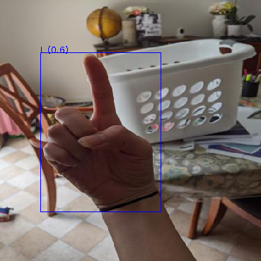
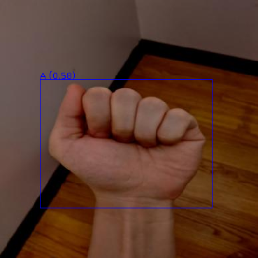
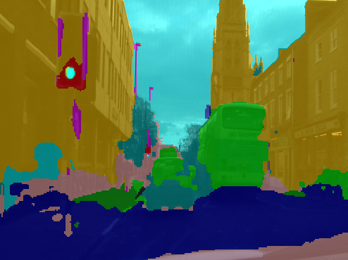
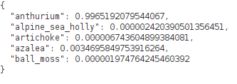

Previewing predictions
Below you can find ways of previewing predictions generated by the various frameworks used through this tutorial. For most of them, you can use ADAMS' Preview browser and a specific content handler. Configurations for these handlers can be applied as follows:
- Copy a configuration from below to the clipboard.
- Open the Preview browser in ADAMS (under the Visualization menu).
- Click on the
...button at the bottom to bring up the options dialog. - Click on the
⋁button at the top right of the dialog and select Paste setup. - Accept the setup by clicking on the
OKbutton.
Domains#
Image classification#
CSV#
adams.gui.tools.previewbrowser.ImageClassificationHandler -image-reader adams.data.io.input.JAIImageReader -reader "adams.data.io.input.ImageClassificationSpreadSheetReportReader -input ${HOME}/temp/preview/image_01965.csv -reader \"adams.data.io.input.CsvSpreadSheetReader -data-row-type adams.data.spreadsheet.DenseDataRow -spreadsheet-type adams.data.spreadsheet.DefaultSpreadSheet\"" -format "$ ({score|.2})"
Example:
JSON#
The following content handler overlays the label and score on the image:
adams.gui.tools.previewbrowser.ImageClassificationHandler -image-reader adams.data.io.input.JAIImageReader -reader adams.data.io.input.ImageClassificationJsonReportReader -format "$ ({score|.2})"
Example:
Object detection#
ROIs CSV format#
adams.gui.tools.previewbrowser.ObjectAnnotationsHandler -image-reader adams.data.io.input.JAIImageReader -file-suffix -rois.csv -reader "adams.data.io.input.ObjectLocationsSpreadSheetReader -input ${HOME}/temp/preview/A11_jpg.rf.ff2610c21c7f6d0a793cb58efc3bd96e-rois.csv -reader \"adams.data.io.input.CsvSpreadSheetReader -data-row-type adams.data.spreadsheet.DenseDataRow -spreadsheet-type adams.data.spreadsheet.DefaultSpreadSheet\" -row-finder adams.data.spreadsheet.rowfinder.AllFinder -col-left x0 -col-top y0 -col-right x1 -col-bottom y1 -col-polygon-x poly_x -col-polygon-y poly_y -col-type label_str -range-meta-data score" -cleaner "adams.gui.visualization.object.objectannotations.cleaning.OverlapRemoval -finder adams.data.objectfinder.AllFinder -overlap-detection adams.data.objectoverlap.AreaRatio -overlap-removal \"adams.data.overlappingobjectremoval.KeepHighestMetaDataValue -score-key score\"" -shape-plotter adams.gui.visualization.object.objectannotations.shape.NoShape -shape-color "adams.gui.visualization.object.objectannotations.colors.PerType -color-provider adams.gui.visualization.core.DefaultColorProvider" -outline-plotter adams.gui.visualization.object.objectannotations.outline.PolygonOutline -outline-color "adams.gui.visualization.object.objectannotations.colors.PerType -color-provider adams.gui.visualization.core.DefaultColorProvider" -label-plotter "adams.gui.visualization.object.objectannotations.label.Anchored -format \"$ ({score|.2})\"" -label-color "adams.gui.visualization.object.objectannotations.colors.PerType -color-provider adams.gui.visualization.core.DefaultColorProvider" -show-object-panel true
Example:

OPEX format#
adams.gui.tools.previewbrowser.ObjectAnnotationsHandler -image-reader adams.data.io.input.JAIImageReader -file-suffix .json -reader "adams.data.io.input.OpexObjectLocationsReader -input ${HOME}/temp/preview/A11_jpg.rf.ff2610c21c7f6d0a793cb58efc3bd96e.json" -cleaner "adams.gui.visualization.object.objectannotations.cleaning.OverlapRemoval -finder adams.data.objectfinder.AllFinder -overlap-detection adams.data.objectoverlap.AreaRatio -overlap-removal \"adams.data.overlappingobjectremoval.KeepHighestMetaDataValue -score-key score\"" -shape-plotter adams.gui.visualization.object.objectannotations.shape.NoShape -shape-color "adams.gui.visualization.object.objectannotations.colors.PerType -color-provider adams.gui.visualization.core.DefaultColorProvider" -outline-plotter adams.gui.visualization.object.objectannotations.outline.PolygonOutline -outline-color "adams.gui.visualization.object.objectannotations.colors.PerType -color-provider adams.gui.visualization.core.DefaultColorProvider" -label-plotter "adams.gui.visualization.object.objectannotations.label.Anchored -format \"$ ({score|.2})\"" -label-color "adams.gui.visualization.object.objectannotations.colors.PerType -color-provider adams.gui.visualization.core.DefaultColorProvider" -show-object-panel true
Example:

Instance segmentation#
ROIs CSV format#
adams.gui.tools.previewbrowser.ObjectAnnotationsHandler -image-reader adams.data.io.input.JAIImageReader -file-suffix -rois.csv -reader "adams.data.io.input.ObjectLocationsSpreadSheetReader -input ${HOME}/temp/preview/Abyssinian_10-rois.csv -reader \"adams.data.io.input.CsvSpreadSheetReader -data-row-type adams.data.spreadsheet.DenseDataRow -spreadsheet-type adams.data.spreadsheet.DefaultSpreadSheet\" -row-finder adams.data.spreadsheet.rowfinder.AllFinder -col-left x0 -col-top y0 -col-right x1 -col-bottom y1 -col-polygon-x poly_x -col-polygon-y poly_y -col-type label_str -range-meta-data score" -cleaner "adams.gui.visualization.object.objectannotations.cleaning.OverlapRemoval -finder adams.data.objectfinder.AllFinder -overlap-detection adams.data.objectoverlap.AreaRatio -overlap-removal \"adams.data.overlappingobjectremoval.KeepHighestMetaDataValue -score-key score\"" -shape-plotter "adams.gui.visualization.object.objectannotations.shape.FilledPolygon -bounding-box-fallback-ratio 0.1" -shape-color "adams.gui.visualization.object.objectannotations.colors.PerType -color-provider \"adams.gui.visualization.core.TranslucentColorProvider -alpha 64 -provider adams.gui.visualization.core.DefaultColorProvider\"" -outline-plotter adams.gui.visualization.object.objectannotations.outline.PolygonOutline -outline-color "adams.gui.visualization.object.objectannotations.colors.PerType -color-provider adams.gui.visualization.core.DefaultColorProvider" -label-plotter "adams.gui.visualization.object.objectannotations.label.Anchored -format \"$ ({score|.2})\"" -label-color "adams.gui.visualization.object.objectannotations.colors.PerType -color-provider adams.gui.visualization.core.DefaultColorProvider" -show-object-panel true
Example:
Image segmentation#
Indexed PNG format#
The following handler works for indexed PNGs and for grayscale ones:
adams.gui.tools.previewbrowser.SimpleImageSegmentationAnnotationsHandler -reader adams.data.io.input.JAIImageReader -overlay-reader "adams.data.io.input.PNGImageReader -color-provider adams.gui.visualization.core.DefaultColorProvider" -colorizer "adams.data.image.transformer.GrayOrIndexedColorizer -color-provider adams.gui.visualization.core.DefaultColorProvider"
Example:

Generic#
Plain text#
Any text file can be viewed with this handler:
adams.gui.tools.previewbrowser.PlainTextHandler
JSON#
This handler displays JSON in a pretty printed way:
adams.gui.tools.previewbrowser.JsonPrettyPrintHandler
Example:
